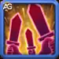
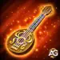

Sebastian isn’t just a bard he’s a battlefield artist. In Hero Wars: Dominion Era, his chords shield allies from crippling debuffs while powering up their critical hits. Every strum of his guitar reshapes combat, making him one of the most reliable supports in the game.
In this guide, we’ll explore Sebastian’s stats, skills, and team synergies so you can use him to his full potential. If you’re looking to counter heroes like Lian, Satori, or Jorgen while empowering your damage dealers with devastating crits, Sebastian is the perfect choice.
Sebastian Guide - Hero Wars: Dominion Era, a game developed by Nexters.
Who Is Sebastian?
Sebastian is a support hero who thrives in the middle line. His music transforms into pure battlefield power, protecting allies from harmful effects and amplifying their damage. With agility as his main stat, Sebastian brings speed, precision, and versatility to any team.
Class: Support
Position: Middle Line
Main Stat: Agility
His role is especially effective against debuff-heavy opponents, making him a top counter-pick in PvP. Beyond that, he synergizes incredibly well with crit-focused heroes, turning every hit into a potential game-changer.
If you enjoy building high-damage compositions and need a reliable safeguard against control heroes, Sebastian is a must-have in your roster.
Sebastian Pros and Cons - Hero Wars: Web and Facebook
✅ Pros
Excels against heroes that heavily rely on debuffs, making him a strong counter in magic and debuff-heavy teams.
Enhances allies’ critical hit damage through his support skills, boosting overall team damage output.
Synergizes well with allies who also increase critical hit chance, amplifying team-wide damage potential.
Provides extra pure damage on ally critical hits, helping to pierce through tanky enemies.
⌠Cons
Dependent on allies’ critical hits for maximum effectiveness; less impactful in teams without crit synergy.
Susceptible to high-damage or backline-focused attackers like Cleaver, Jhu, Kayla, Jorgen, and Luther.
Polaris can reduce his support effectiveness by interfering with debuff removal via her Pulsing Comet skill.
Sebastian Skills Upgrade Priority - Hero Wars: Dominion Era
Sebastian’s skills focus on removing debuffs, boosting crits, and adding pure damage. Here’s the best order to upgrade them.
Ode to Serenity
This is Sebastian’s ultimate skill. It instantly removes all debuffs from your team and creates a shield that blocks 15 new debuffs from being applied.
In simple terms, it “cleans” your team and then prevents enemies like Lian, Satori, or Jorgen from disabling your allies again.
Evolution Priority:Very High – This is his strongest ability because it guarantees your team stays free from control effects, making it the first skill you should max out.
Skill - Ode to Serenity, Hero Wars Dominion Era.
Battle Song
This skill increases the critical hit chance of all allies for 5 seconds.
Formula: (0.1% Physical Attack + Level * 0.2 + 15)%.
That means the stronger your Sebastian’s physical attack, the higher the bonus critical chance your team gets.
Evolution Priority:High – Critical chance is a huge damage booster for many heroes (like
Jhu,
Yasmine, or
Ishmael).
Upgrade this second, right after his ultimate.
Skill - Battle Song, Hero Wars Dominion Era.

Striking Solo
While Battle Song is active, allies’ critical hits deal extra pure damage.
Formula: (0.12% Physical Attack + Level * 0.2 + 4)% of the critical damage dealt.
“Pure damage” ignores armor and magic defense, so this adds a lot of value in long fights.
Evolution Priority:Medium High – This skill is powerful but works best only if you already have crit-based damage dealers. Upgrade after Ode to Serenity and Battle Song.
Skill - Striking Solo, Hero Wars Dominion Era.
Public Idol
Sebastian enters battle with extra energy, allowing him to cast Ode to Serenity faster.
Formula: (0.0595% Physical Attack + Level * 0.2 + 8)%.
This means at the start of every fight he’s already closer to using his ultimate.
Evolution Priority:Medium – It helps, but since Sebastian gains energy quickly in battles anyway, this is less important than his other skills.
Skill - Public Idol, Hero Wars Dominion Era.
Best Patronage for Sebastian
Choosing the best pet for Sebastian means focusing on crit synergy and utility. Fenris is the top choice, followed by Albus, with Oliver last.
Fenris gives Sebastian Physical Attack and Armor Penetration through patronage, which strengthens his synergy with crit-based teams. His bonus skill lets Sebastian blind enemies for 2 seconds with basic attacks, reducing enemy accuracy. This perfectly supports teams that rely on critical strikes, making Fenris the best option.
Albus boosts both Magic and Physical Attack, and his patronage skill increases pure damage dealt by Sebastian. While Sebastian himself is not a DPS, this pet still improves his impact in crit-heavy teams by adding extra damage, making him a solid secondary choice.
Oliver provides Health and Armor as patronage and heals his master when their HP drops below 50%. While this helps survivability, Sebastian usually stays in the middle line and is rarely the primary target. That makes Oliver less valuable compared to Fenris or Albus.
Best Skin for Sebastian Hero Wars: Dominion Era
Sebastian’s best skins focus on increasing his Physical Attack and Agility, boosting his skills’ power. Defense skins are situational.
Default Skin (Agility +1,365)
The default skin boosts Sebastian’s Agility, his main stat. Each point in Agility increases Physical Attack, Armor, and gives bonus attack since Agility is his primary stat. This improves his damage scaling and survivability.
Evolution Priority:High – A strong investment that enhances Sebastian’s overall performance.
Total of Agility Skin Stone for max level: 30,825
Romantic Skin (Physical Attack +7,095)
The Romantic Skin greatly increases Sebastian’s Physical Attack, which directly boosts his skills Battle Song and Striking Solo. This is the best offensive option for maximizing his impact.
Evolution Priority:Very High – Best skin overall for empowering Sebastian’s skill formulas and team synergy.
Total of Agility Skin Stone for max level: 55,410
Dark Depths Skin (Armor +10,650)
This skin increases Sebastian’s Armor, making him tougher against physical attackers. Useful in PvP battles against crit-heavy opponents.
Evolution Priority:Medium – Great defensive boost but situational compared to offensive skins.
Total of Agility Skin Stone for max level: 55,410
Spring Skin (Magic Defense +10,650)
This skin raises Sebastian’s Magic Defense, protecting him from mages like Lars and Orion. Helpful if you face a lot of magic teams.
Evolution Priority:Low – Situational, only worth upgrading if you fight many magic-damage teams.
Total of Agility Skin Stone for max level:
55,410
Stellar Skin (Health +106,645)
The Stellar Skin boosts Sebastian’s Health pool, making him harder to kill. Since Health helps against both physical and magical damage, it’s a more balanced defensive choice.
Evolution Priority:Medium-High – Good for overall survival, though still not as important as Agility or Physical Attack.
Total of Agility Skin Stone for max level:
55,410
Sebastian Artifact Evolution Priority Hero Wars: Dominion Era
Sebastian’s artifacts boost his team utility and damage potential. Here’s the real priority order for evolving his artifacts in Hero Wars: Dominion Era.

Weapon Artifact: Old Lute
This weapon artifact increases Critical Hit Chance for the whole team when Sebastian casts his ultimate. Since his Shieldbreaker skill removes debuffs and empowers the team, boosting crits is extremely valuable in both offense and defense.
Crit Hit Chance: +13941
Evolution Priority:High – Essential, as it synergizes directly with his skills and significantly increases team damage output.
Book Artifact: Warrior's Code
This book boosts Sebastian’s own stats with Critical Hit Chance and Physical Attack. It improves his personal damage but doesn’t affect the team directly like the weapon artifact does.
Crit Hit Chance: +4647
Physical attack: +5577
Evolution Priority:Medium – Good for boosting Sebastian’s individual performance, but not as impactful as the team-wide buff from Old Lute.
Ring Artifact: Agility
The ring increases Sebastian’s Agility, improving Physical Attack and Armor. This boosts the effectiveness of his support skills, like Battle Song and Striking Solo, by increasing the extra critical damage allies deal.
Agility: +6249
- Physical attack: +18,747
- Armor: +6249
Evolution Priority:Medium High – Improves Sebastian’s support capabilities and scaling of critical damage, making it more impactful than Warrior’s Code in many team setups.
Sebastian Glyph Evolution Priority
Sebastian’s glyphs enhance his support capabilities and team damage. Prioritize stats that directly improve his skills and buff allies effectively.
1st Glyph - Physical Attack:
Boosts Sebastian’s Physical Attack, which directly improves the damage bonus from Battle Song and Striking Solo. This enhances allies’ critical damage and overall team performance.
Physical Attack: +4340
Evolution Priority:Very High – Core stat for maximizing support effectiveness and scaling ally critical hits.
2nd Glyph - Agility:
Each Agility point increases Physical Attack and Armor. Since Agility is Sebastian’s main stat, it further enhances his support skills, boosting allies’ damage and his durability.
Agility: +1,135
Physical Attack from Agility: +3,405
Armor from Agility: +1,135
Evolution Priority:High – Improves skill effectiveness and provides defensive scaling.
3rd Glyph - Health:
Increases Sebastian’s Health pool, letting him survive longer in the middle line and maintain buffs for allies during combat.
Health: +62,200
Evolution Priority:Medium High – Useful for durability and consistent support uptime.
4th Glyph - Magic Defense:
Improves resistance against magic damage. Situationally useful against mage-heavy teams, but not critical for his main support role.
Amira’s Desperate Fury targets enemies with Agility as their main stat, increasing their Critical Hit chance temporarily, but causes all their critical hits to miss. This directly negates Sebastian’s Battle Song and Striking Solo effects on allies.
Cleaver
Cleaver uses his hook to pull the most distant enemy into the frontline. This disrupts Sebastian’s positioning in the middle line, preventing him from safely supporting allies and maintaining buffs.
Helios
Helios’ Flaming Retribution damages attackers with a fire beam whenever his allies are critically hit. Since Sebastian’s skills aim to boost allies’ crit damage, Helios punishes them directly and reduces their effectiveness.
Jhu
Jhu attacks the most distant enemy, often targeting Sebastian in the middle line. By quickly eliminating him or pressuring him, Jhu prevents Sebastian from safely casting buffs for the team.
Kayla
Kayla jumps to the backline and attacks the most distant enemy, often Sebastian. This interrupts his support rotation and can quickly reduce his uptime in the middle line.
Jorgen
Jorgen redirects damage from his allies to the most distant enemy. This makes Sebastian absorb unintended damage if he’s the furthest back, preventing him from supporting safely and potentially breaking his shields.
Luther
Luther jumps to the middle of the enemy team and attacks the backline. He can target Sebastian directly, disrupting his positioning and preventing him from casting support skills effectively.
Polaris
Polaris’ Pulsing Comet attacks the most distant enemy, dealing area damage that hits multiple points along the path.
Sebastian Best War Flags - Hero Wars
Choose War Flags that maximize Sebastian’s support skills and amplify ally damage, improving critical hits and team effectiveness in battles.
War Flag of Frost:
This War Flag reduces enemy skill levels by 2 every 18 seconds for 8 seconds, weakening opponents’ ability to counter Sebastian’s buffs.
Sebastian and Team Benefit: Lowers the effectiveness of enemy debuffers and damage dealers, allowing Sebastian to maintain buffs and increase allies’ critical hit damage safely.
War Flag of Swift Warriors:
Speeds up skill cooldowns for Warrior-class heroes by 5%, allowing them to attack more frequently.
Sebastian and Team Benefit: Faster skill rotations increase the number of critical hits triggered by Sebastian’s Battle Song and Striking Solo, amplifying team-wide damage.
War Flag of Decline:
Reduces enemy team healing by 10%, limiting sustain for tough opponents.
Sebastian and Team Benefit: Makes it easier for Sebastian’s allies to eliminate priority targets quickly, maximizing the effectiveness of critical hit buffs and pure damage enhancements.
War Flag of Recovery:
Increases all healing received by 10%, improving team sustainability during prolonged fights.
Sebastian and Team Benefit: Supports Sebastian’s middle-line survival, ensuring he can continue casting buffs and enhancing allies’ critical hits throughout battles. Note: Sebastian is not a healer himself, so having a dedicated healer in the team is essential to fully benefit from this War Flag.
Best Teams for Sebastian - Hero Wars: Dominion Era
Top Defense Teams for Sebastian
#
Table: Best Defense Teams for Sebastian
Dante, Nebula, Sebastian, Aidan, Fafnir, Khorus
Lyria, Ishmael, Nebula, Sebastian, Axel
Galahad, Lyria, Tristan, Sebastian, Lara, Axel
Astaroth, Ishmael, Sebastian, Thea, Fafnir, Axel
Rufus, Dante, Sebastian, Iris, Martha, Axel
Top Attack Teams for Sebastian
#
Table: Best Attack Teams for Sebastian
Khorus, Fafnir, Aidan, Sebastian, Nebula, Dante
Axel, Sebastian, Nebula, Ishmael, Lyria
Axel, Lara, Sebastian, Tristan, Lyria, Galahad
Axel, Fafnir, Thea, Sebastian, Ishmael, Astaroth
Axel, Martha, Iris, Sebastian, Dante, Rufus
Conclusion
Sebastian is a versatile support hero in Hero Wars: Dominion Era, excelling at boosting allies' critical hits and adding pure damage. His abilities make him particularly effective against debuff-reliant enemies while synergizing with heroes who also enhance crit damage.
While he doesn’t deal massive damage himself, Sebastian’s presence can turn the tide of battle by amplifying team performance and maintaining buff uptime. Pairing him with the right allies, War Flags, and artifacts maximizes his utility and ensures your team stays strong in both attack and defense.
Overall, mastering Sebastian’s positioning, skill upgrades, and team composition allows you to leverage his support potential fully. With careful planning, he can become a key pillar of your strategy, enhancing every battle your team fights in Hero Wars: Dominion Era.
About the Author
Alexandre Domingos holds a postgraduate degree in Engineering and works as a Production Supervisor. In his spare time, he explores the gaming world as a YouTuber and blogger at Alexandre Games, combining his passion for technology and strategy. He has been immersed in gaming since the age of 5, starting on classic platforms like MSX, Master System, Nintendo, and even an old 286 PC.
Did you like our Sebastian's Guide for Hero Wars Web and Facebook? Is there something you didn't understand or would like to suggest changes to? We invite you to join our comment section on the Alexandre Games Blog page. Feel free to express your opinion, clarify your doubts, and share your suggestions. Click the button below to get started:


 30,825
30,825